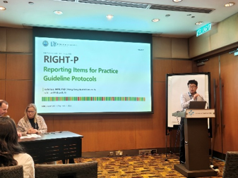

Xufei Luo
Home
Research
Awards
Guidelines
Publications
Books & Patents
Conference
Contact
Conference
2026

GIN Conference · Kuala Lumpur
Abstract Review Committee Member
· Long Oral
2025
GIN Conference · Geneva
Long Oral
2024
Global Evidence Summit · Prague
Long Oral
2024
Advancing Health with AI · Nature Conference · Wenzhou
Poster
2023
Cochrane Conference · London
Short Oral
2019
G-I-N & JBI Conference · Adelaide
Special Oral
Loading conference abstracts…